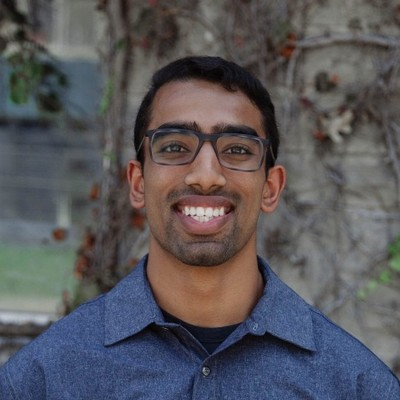
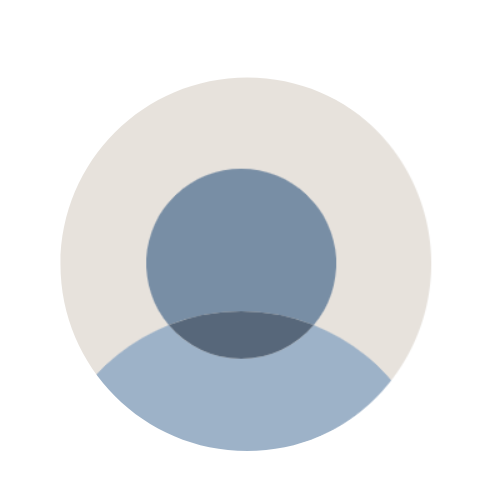
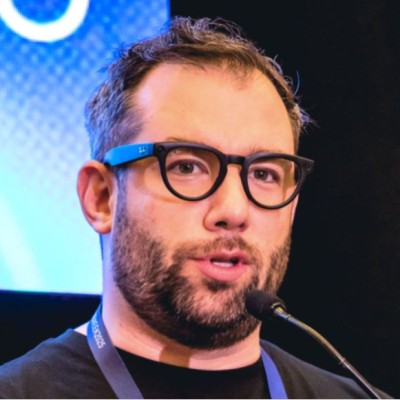

TechLegion × SoftBees
An AI agent for AML monitoring at ASVIO Bank cut bank-statement review from 11.5 hours to about one hour — with every finding evidenced.
Read the storyOur first cohort brings together an international community of software architects, engineers, cybersecurity experts, technology leaders, and AI practitioners.
Software Engineer by nature. Java, distributed systems, cloud platforms, and AI-assisted development.
Data, Cloud, Risk, Analytics and Cloud Economics. J.P. Morgan.
Infrastructure & Energy Transition. Cambridge MBA '25. Ex-GE. EverPower Ltd.
Software Engineer building modern, cloud-native applications.
Working across development, DevOps and security engineering.

🚀 Cansbridge Fellow. 5★ Uber Passenger.

Cybersecurity, AI, automation and programming.
Microsoft 365 & AI. Governance & IT Transformation. Anthropic Certified Architect.
Helping CEOs and Boards turn AI and technology investment into measurable enterprise value. Ex-BCG, ex-UBS. LBS · Columbia · HKU Global EMBA.

XR, Automation & AI Agents, GenAI Audio.
How teams in the TechLegion community are using Claude in real production work.
An AI agent for AML monitoring at ASVIO Bank cut bank-statement review from 11.5 hours to about one hour — with every finding evidenced.
Read the storyA TechLegion Architect Cohort member used Claude Code and a team of six AI agents to build a decision-support app with ~3,000 checked data points per chart and a reading in about a minute.
Read the storyLearn more about TechLegion's programs and how to get started on your own CCA-F certification path.